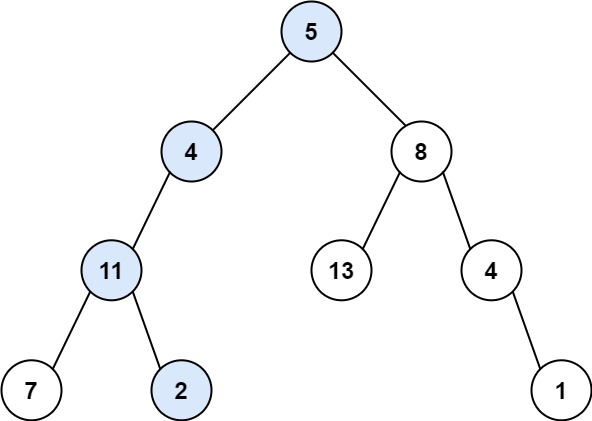
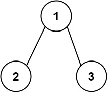

112. 路径总和
DFS 递减：targetSum 一路减去结点值，到叶子判断是否刚好等于剩余；左边成真就短路，不再看右边。
思路
root == null返回 false：空树没有路径；结点只有一边有孩子时，缺的那边也走到这里，自然判 false。- 到叶子（左右都空）：
targetSum == root.val就是这条路径刚好凑够。 - 非叶子：
左 || 右，两边都传targetSum - root.val；左边成真整棵表达式短路，右边整棵不查。
图解
最优解
1class Solution {2 public boolean hasPathSum(TreeNode root, int targetSum) {3 // 空结点凑不出路径（空树、或某一边没有孩子都走到这）4 if (root == null) return false;5 // 叶子：整条路径的和就差这最后一个值6 if (root.left == null && root.right == null) {7 return targetSum == root.val;8 }9 // 剩余和一路递减；左边已经成真就短路，右边不再看10 return hasPathSum(root.left, targetSum - root.val)11 || hasPathSum(root.right, targetSum - root.val);12 }13}题目
给你二叉树的根节点 root 和一个表示目标和的整数 targetSum 。判断该树中是否存在 根节点到叶子节点 的路径，这条路径上所有节点值相加等于目标和 targetSum 。如果存在，返回 true ；否则，返回 false 。
叶子节点 是指没有子节点的节点。
示例 1：

输入：root = [5,4,8,11,null,13,4,7,2,null,null,null,1], targetSum = 22 输出：true 解释：等于目标和的根节点到叶节点路径如上图所示。
示例 2：

输入：root = [1,2,3], targetSum = 5 输出：false 解释：树中存在两条根节点到叶子节点的路径： (1 --> 2): 和为 3 (1 --> 3): 和为 4 不存在 sum = 5 的根节点到叶子节点的路径。
示例 3：
输入：root = [], targetSum = 0 输出：false 解释：由于树是空的，所以不存在根节点到叶子节点的路径。
提示：
- 树中节点的数目在范围
[0, 5000]内 -1000 <= Node.val <= 1000-1000 <= targetSum <= 1000
题面取自力扣当前版本。
数据快照 2026-11-04。题面版权归力扣所有，本站点仅供本人学习使用，请勿对外发布。